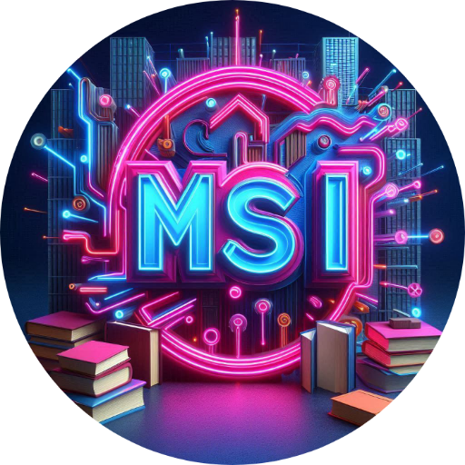
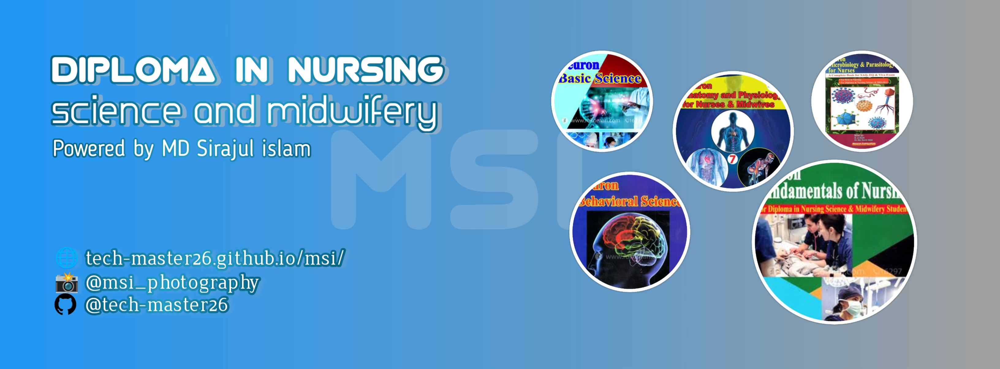
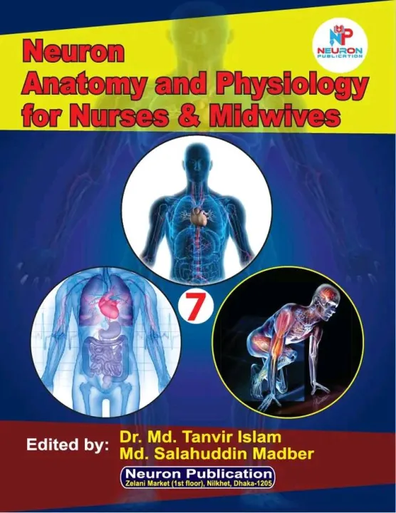
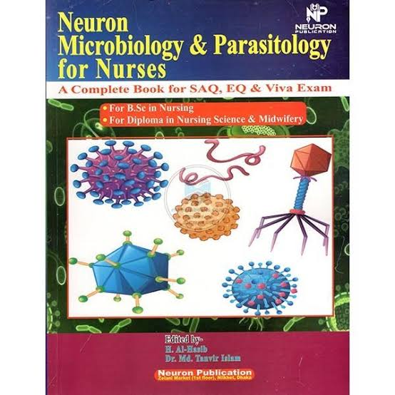
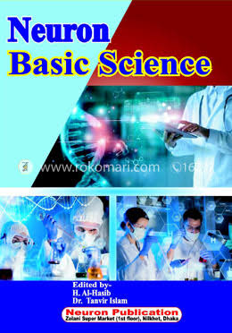

Diploma in nursing
Diploma in nursingscience and midwifery
science and midwifery

SUBJECTS'S

Anatomy and Physiology
Diploma 1st year

Microbiology and parasitology
Diploma 1st year

Behavioral Science
Diploma 1st year

Basic science
Diploma 1st year
STAY CONNECTED
এই ওয়েবসাইটটি তৈরি করার মূল উদ্দেশ্য হলো নার্সিং স্টুডেন্টদের পড়াশোনা সহজ করে তোলা এবং পরীক্ষায় ভালো ফলাফল অর্জন করার জন্য এ সাইটে আমি নার্সিং এর প্রথম বর্ষের ফাইনাল পরীক্ষায় আসা প্রশ্নগুলো একত্রিত করেছি যাতে প্রথম বর্ষের স্টুডেন্টদের এই প্রশ্নগুলো বারবার খোঁজা না লাগে।